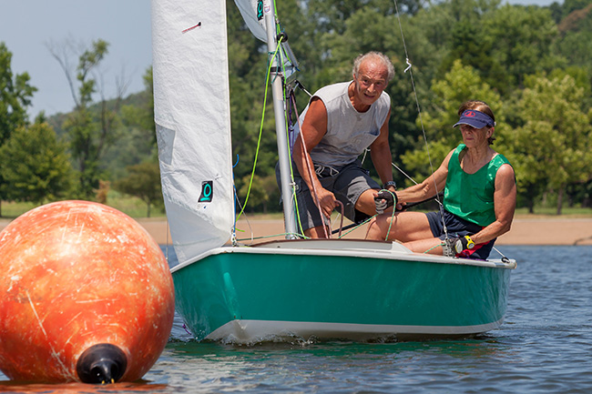

News:
Commodore's Corner (from Newsletter - January 2017 -
(Download PDF Version)
January 24, 2017
Chris Linneman - 2017 CCSA Commodore
Let’s hope we have a good sailing year just like last year. As your new commodore, the first thing I want to do is compliment Charles Bell for the great job he did the last three years as commodore. I hope I can do just as well as he did.
Congratulation needs to go to our first place finishers, Stephan and Monica Irgens in the blue fleet and Jim Cox in the red fleet. Also congratulations to the two sailors of the year winners. Bob Gill and Marshall Galliers, both for their continuous involvement with the club.
Now for 2017, you notice we have a new Fair Winds Newsletter. is newsletter was put together by Carolyn Niehoff . She did a terrific job. We will send out the newsletter by email, on our website www.SailCCSA.com and on our Facebook page. One nice feature on this newsletter are the hyperlinks that will connect you to other web pages and maps.
Our first event this year is the Winter Social at Concordia Lutheran Church on February 4, 2017, 5:30 pm. The event is event is open to anyone interested in our club. Please bring a dish to share;
A-H Appetizer or Dessert , I-M Side Dish, N-Z Main Dish
For entertainment we will have sailing games provided by Trish Ribaudo and a sailboat book exchange event. I know you have many sailing books lying around. Bring in your sailing books and exchange them for others. You must take home any books not exchanged.
We will also have the 2017 membership forms available.
 Stephan and Monica Irgens - 1st Place - Blue Fleet - 2016 Jim Cox - 1st Place - Red Fleet - 2016 January 24, 2017
How to Fix a hole in your boat
John Millaire & Trish Ribaudo
Prepare the area to be patched by grinding the edges of the hole back to
solid berglass.
Next, create a “Scarf Joint” by grinding the edge to make a 5 to 1 angled lip (1/8” hull thickness X 5 = 5/8”). is creates a stronger “bonding surface” for the new patch to stick to.
To make a backing, we used heat to mold 1/8” plastic sheeting to conform to the shape of the hull.
Fiberglass resin was then applied to the inside of the hole and to the plastic to x it in the hole.
To secure the backing, we tied it to a wire basket placed above the hole and it was allowed to dry.
We cut berglass cloth to make ve small layers in the shape of the hole.
Finally ready, we mixed up the berglass resin to a “catsup” consistency
using micro bubbles.
A layer of cloth was placed on the hole and saturated with the resin.
Each layer of cloth is allowed to dry before the next layer is applied. e last 1/8” should be resin only to prevent the cloth from showing.
10. Sand smooth and finish off with hull paint and the hole is repaired. Let’s get sailing!
Tip: Creating the Scarf Joint is the most important step.